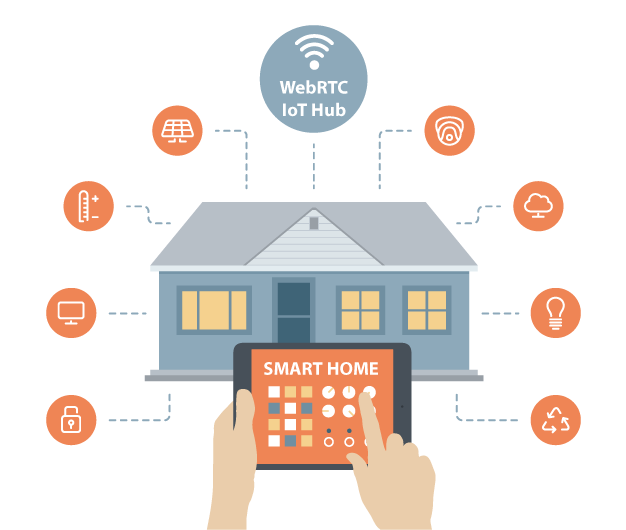

WebRTC and Internet of Things
The fourth stage of the Industrial Revolution is upon us set in motion by the Internet of Things* (IoT). IoT offers the opportunity for businesses to improve customer satisfaction by developing new products and services. But there are the principal issues that are going to have to be resolved before customers can start to benefit from the IoT.
- Connecting Remote Assets
- Data Storage
- Security
- Consumer Privacy
- Identity and Access Management
Today most connected devices operate in siloes, preventing us from unleasing the IoT's full potential. The next generation WebRTC Data Channel** technology uses a peer-to-peer architecture that provides privacy measures, which in combination with Identity Relationship Management assure that confidential information can be accessed only by authorised parties. This technology allows for ad hoc communication beyond traditional enterprise boundaries.
WebRTC IoT Hub is a device that resides on the premises and can be paired with a variety of sensors as well as third party connected devices. The collected data are encrypted and stored on the Hub device and periodically backup through cloud data storage services. The Hub enables consumers to directly connect, manage, and monitor all of their remote devices and sensors while still preserving privacy.
Homes and offices
In the below picture you can see the basic principle of how to directly communicate with various home devices and appliances through the WebRTC IoT Hub from Android or iOS app.

Factories and warehouses
Hospitals and clinics
* Cisco talks about the Internet of Everything (IoE) defined as bringing together people, processes, data, and things to make networked connections. ** WebRTC Data Channel is a peer-to-peer technology that can run not only between browsers as stated in the specification, but also on servers or other applications.